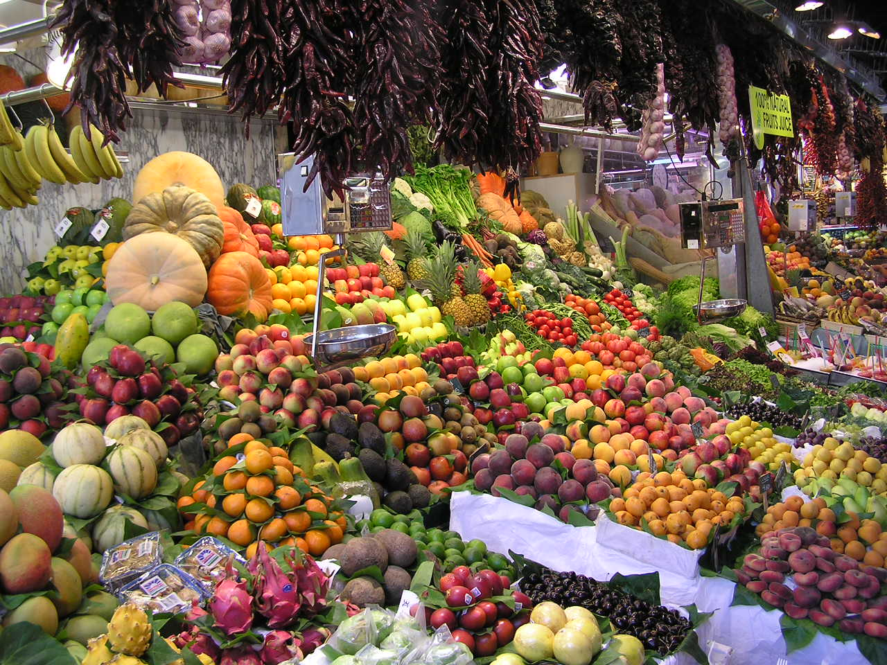

Foto: Dungodung · Public domain · Wikimedia Commons
La Boqueria
Durata consigliata: 45 min – 1 oraIl mercato coperto più famoso di Barcellona, appena dietro la Rambla. Un'esplosione di colori tra banchi di frutta, jamón, pesce, frullati e banconi dove mangiare al volo. Vivace e caotico, va vissuto più che visitato.
Dritte pratiche: i banchi all'ingresso sono i più turistici e cari; addentrati verso il fondo per prezzi e atmosfera più autentici. Evita mezzogiorno se non ami la ressa.